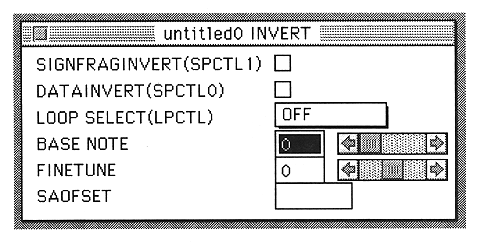
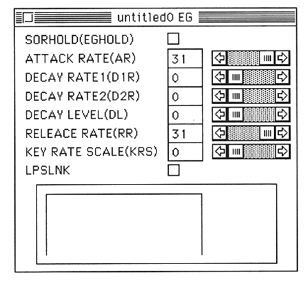

Return to previous page ｜ Return to menu ｜ Go to next page
-
Select an AIFF file in this window and press the OK button. Then, the AIFF file name will be displayed in the square of the Slot window that has never been written.
After this, if there is a loop in this WAVE data, double-click the slot window inverter (the one with a circle in the triangle). Then, the inverter window is displayed.

Select the loop mode from the LOOP SELECT popup menu.
A little more setting is necessary to play the sound.
Next, double-click the place where the mountain picture is written in the Slot window. The EG window will be displayed. Set the (AR) and (RR) sliders to the right (display is 31).

Return to previous page ｜ Return to menu ｜ Go to next page